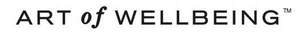

Trade Mark Journal No.2025/016 18 April 2025
UK00004178263 24 March 2025 (3,4)

- Class 3
- Perfume; Fragrances; Perfumery and fragrances; Fragrance sachets; Fragrance emitting wicks for room fragrance; Perfumes; Oils for perfumes and scents; Aromatics for fragrances; Scents; Perfume oils; Potpourris [fragrances]; Fragrance preparations; Aromatics for perfumes; Musk [perfumery]; Fragrance refills for non-electric room fragrance dispensers; Amber [perfume]; Colognes; Air fragrance preparations; Body fragrances; Cologne; Household fragrances; Perfume water; Scented water for fragrancing; Room fragrances; Geraniol for fragrancing; Cedarwood perfumery; Room perfume sprays; Air fragrance reed diffusers; Extracts of perfumes; Extracts of flowers [perfumes]; Flowers (Extracts of -) [perfumes]; Extracts of flowers being perfumes; Liquid perfumes; Fragrance sachets for eye pillows; Fragrances for automobiles; Essences for fragrancing; Perfumery; Scented oils; Ethereal oils for fragrancing; Ionone [perfumery]; Perfumed potpourris; Fragrance for household purposes; Natural oils for perfumes; Vanilla perfumery; Deodorants for personal use [perfumery]; Body deodorants [perfumery]; Geraniol fragrancing compounds; Perfume oils for the manufacture of cosmetic preparations; Perfumery products; Aromatic potpourris; Scented soaps; Mint for perfumery; Peppermint oil [perfumery]; Scented sachets; Perfumeries; Perfuming sachets; Eau de cologne [cologne water]; Fragrant sachets; Aftershave lotions; Perfumed soaps; Room perfumes in spray form; Perfumed sachets; Scented body lotions; Scented linen sprays; Feminine deodorant sprays; Synthetic vanillin [perfumery]; Aftershave balm; Perfumed soap; Perfumes for cardboard; Heliotropin fragrancing compounds; Solid perfumes; Refills for electric room fragrance dispensers; Scented oils used to produce aromas when heated; Aftershave balms; Cologne water; Scented body spray; Synthetic perfumery; After-shave lotions; Aftershaves; Aftershave; Scented room sprays; Fragrances for personal use; Perfumes for ceramics; Perfumed creams; Perfumed powder [for cosmetic use]; Piperonal fragrancing compounds; Perfumed oils for skin care; After-sun oils [cosmetics]; Aromatic oils for the bath; Essential oils as perfume for laundry purposes; Skin fresheners [cosmetics]; Perfumed powders [for cosmetic use]; Scented body creams; Scented body lotions and creams; Agarwood [incense]; Scented fabric refresher sprays; Perfumed powder; Aromatherapy lotions; Room fragrancing products; Sachets for perfuming linen; Linen (Sachets for perfuming -); Perfumed powders; After-shave balms; Pomanders [aromatic substances]; Natural perfumery; Incense spray; Fumigation preparations [perfumes]; Aftershave moisturising cream; Scented water; After-shave; Synthetic musk; Suntan oils [cosmetics]; Jasmine oil; Aftershave creams; Beauty lotions; Scented wood; Suntan lotion [cosmetics]; Scented fabric refresher spray; Eau de colognes; Eau de Cologne; Eau de cologne; Perfumed lotions [toilet preparations]; Eaux de Cologne; Eaux de cologne; Tanning oils [cosmetics]; Perfumed body lotions [toilet preparations]; Deodorant soap; Soap (Deodorant -); Aftershave milk; Incense sachets; Roll-on deodorants [toiletries]; Cosmetics; Perfumed water; Eau de parfum; Creams (Cosmetic -); Cosmetic creams; Cosmetics and cosmetic preparations; Sunscreens [for cosmetic use]; Cosmetic moisturisers; Sunscreen [for cosmetic use]; Cosmetic soaps; Cosmetic facial lotions; Facial lotions [cosmetic]; Cosmetic soap; Lotions for cosmetic purposes; Cosmetic masks; Tonics [cosmetic]; Dyes (Cosmetic -); Cosmetic dyes; Facial creams [cosmetic]; Facial creams [for cosmetic use]; Cosmetic powder; Cosmetic preparations; Anti-aging creams [for cosmetic use]; Cosmetic pencils; Pencils (Cosmetic -); Facial cleansers [cosmetic]; Anti-ageing creams [for cosmetic use]; Cosmetic kits; Kits (Cosmetic -); Facial moisturisers [cosmetic]; Anti-wrinkle creams [for cosmetic use]; Cosmetic skin fresheners; Lacquer for cosmetic purposes; Cosmetic creams for the skin; Skin creams [cosmetic]; Skin creams [for cosmetic use]; Pro-collagen for cosmetic purposes; Facial cream [for cosmetic use]; Henna for cosmetic purposes; Skin balms [cosmetic]; Serums for cosmetic purposes; Skin cleansers [cosmetic]; Collagen for cosmetic purposes; Cosmetic skin enhancers; Cosmetic tanning preparations; Cosmetic hair lotions; Cleansing creams [cosmetic]; Cosmetic rouges; Facial scrubs [cosmetic]; Self-tanning preparations [cosmetic]; Facial toners [cosmetic]; Lip coatings [cosmetic]; Pomades for cosmetic purposes; After-sun lotions [for cosmetic use]; Skin cream [for cosmetic use]; Suncare lotions [for cosmetic use]; Skin whitening preparations [cosmetic]; Anti-ageing serums for cosmetic purposes; Cosmetic creams and lotions; Anti-wrinkle cream [for cosmetic use]; Toning creams [cosmetic]; Adhesives for cosmetic purposes; Cosmetic sun-protecting preparations; Acne cleansers, cosmetic; Astringents for cosmetic purposes; Cosmetic facial masks; Facial masks [cosmetic]; Glitter for cosmetic purposes; Sunscreen creams [for cosmetic use]; Cosmetic sunscreen preparations; Facial washes [cosmetic]; Lip stains for cosmetic purposes; Toners for cosmetic purposes; Cosmetic facial packs; Facial packs [cosmetic]; Geraniol for cosmetic purposes; Skin care lotions [cosmetic]; Cosmetic massage creams; Cosmetic nail preparations; Cosmetic suntan lotions; Cosmetic suntan preparations; Retinol cream for cosmetic purposes; Eyelashes (Cosmetic preparations for -); Cosmetic preparations for eyelashes; Cosmetic hand creams; Skin toners [cosmetic]; Cosmetic products for the shower; Skin hydrators for cosmetic purposes; Cosmetic creams for skin care; Skin care creams [cosmetic]; Procollagen for cosmetic purposes; Pencils for cosmetic purposes; Cosmetic eye gels; Gels for cosmetic purposes; Hair care creams [for cosmetic use]; Hair care lotions [for cosmetic use]; Exfoliating scrubs for cosmetic purposes; Cosmetic sun-tanning preparations; Tooth powders [for cosmetic use]; Hair tonics [for cosmetic use]; Cosmetic preparations for slimming purposes; Slimming purposes (Cosmetic preparations for -); Self tanning creams [cosmetic]; Skin care (Cosmetic preparations for -); Cosmetic preparations for skin care; Cosmetic nourishing creams; Skin conditioning creams for cosmetic purposes; Ointments for cosmetic use; Moisturising gels [cosmetic]; Moisturising skin lotions [cosmetic]; Suntan oils for cosmetic purposes; Self tanning lotions [cosmetic]; Cotton for cosmetic purposes; Moisturising concentrates [cosmetic]; Cosmetic face powders; Face powders [for cosmetic use]; Softening cleanser [cosmetic]; Essences for cosmetic purposes; Cosmetic eye pencils; Artificial nails for cosmetic purposes; Lint for cosmetic purposes; Sun creams [for cosmetic use]; Removable tattoos for cosmetic purposes; Soap; Detergent soap; Bath soap; Shower soap; Shaving soap; Laundry soap; Soaps; Toilet soap; Antiperspirant soap; Soap (Antiperspirant -); Aloe soap; Liquid soap; Soap powder; Handmade soap; Soap powders; Almond soap; Bars of soap; Creams (Soap -) for use in washing; Bar soap; Skin soap; Waterless soap; Soap products; Liquid soap for laundry; Sugar soap; Loofah soaps; Carbolic soaps; Liquid bath soap; Cakes of soap; Soap (Cakes of -); Saddle soap; Soap sheets; Liquid soap for dish washing; Hand soap; Granulated soap; Dish soaps; Soap pads; Beauty soap; Industrial soap; Bath soaps; Toilet soaps; Body soap; Laundry soaps; Shaving soaps; Cakes of toilet soap; Liquid soaps for laundry; Liquid soaps; Soap solutions; Cakes of soap for body washing; Liquid bath soaps; Cream soaps; Aloe soaps; Body cream soap; Liquid soap used in foot bath; Almond soaps; Soaps and gels; Soap for brightening textile; Non-medicated toilet soaps; Saddle soaps; Liquid soap used in foot baths; Sponges impregnated with soaps; Soap free washing emulsions for the body; Non-medicated soaps; Facial soaps; Soaps for laundry use; Granulated soaps; Hand soaps; Soap for foot perspiration; Foot perspiration (Soap for -); Soaps in gel form; Soaps for toilet purposes; Soaps for household use; Cakes of soap for household cleaning purposes; Soaps in liquid form; Soaps for brightening textiles; Soapy gels; Liquid soaps for hands and face; Refill packs for hand soap dispensers; Washing-up detergent; Bath lotion; Shampoo; Dishwashing detergents; Soaps for body care; Pre-moistened towelettes impregnated with dishwashing detergent; Liquid laundry detergents; Shampoo bars; Powder laundry detergents; Cloths impregnated with a detergent for cleaning; Foaming bath gels; Shaving lotion; Moist paper hand towels impregnated with a cosmetic lotion; Cleansing lotions; Moisturiser; Anti-ageing moisturiser; Skin moisturiser; Skin moisturisers; Skin moisturizer; Moisturising creams; Moisturisers [cosmetics]; Moisturising skin creams [cosmetic]; Hair moisturisers; Moisturising body lotion [cosmetic]; Moisturizing creams; Moisturizers; Skin moisturizers; Skin lotion; Exfoliant creams; Non-medicated moisturisers; Skin moisturizer masks; Moisturising creams, lotions and gels; Anti-aging moisturizers; Skin cleansing lotion; Body moisturisers; Mattifying gel cream; Skin moisturizers used as cosmetics; After-sun creams; Exfoliating creams; After-sun lotions; Anti-ageing creams; Oils for moisturising the skin after sunbathing; Anti-aging moisturizers used as cosmetics; Pre-shave creams; Moisturizing body lotions; Anti-ageing serum; Creams for firming the skin; After sun moisturisers; Sunscreen creams; Hair moisturising conditioners; Facial moisturizers; Skin lotions; Lotions for the skin; Skin emollients; Hydrating creams for cosmetic use; Skin hydrators; Facial lotion; Exfoliants for the cleansing of the skin; Skin cleansing cream; Skin cleansing cream [non-medicated]; Non-medicated skin serums; Skin creams; Creams for the skin; Anti-wrinkle creams; Sunscreen lotions; Moisturizing milk; Suncare lotions; Skin cleansers; Hair moisturizers; Moisturizing preparations for the skin; Sunscreen cream; Blemish balm creams; Wipes impregnated with a skin cleanser; Suntan creams [self-tanning creams]; After-shave creams; Hair lotion; Anti-aging creams; Emollient shampoos; After-sun milk [cosmetics]; Skin cream; After-sun milks [cosmetics]; Skin emollients [non-medicated]; Non-medicated skin creams; Skin creams [non-medicated]; Day lotion; Non-medicated skin lotions; Beauty balm creams; Sun-block lotions; Skin cleansers [non-medicated]; Skin balms (Non-medicated -); Non-medicated skin balms; Cosmetic creams for dry skin; Skin whitening creams; Creams (Skin whitening -); Creams for tanning the skin; Anti-wrinkle cream; Moisturising preparations; Skin toner; Cream for whitening the skin; Whitening the skin (Cream for -); Sun tan lotion; Anti-aging cream; Non-medicated skin clarifying lotions; Facial concealer; Tissues impregnated with a skin cleanser; Milky lotions for skin care; Skin make-up; Skincare cosmetics; After-sun milk; After-sun milks; Exfoliants for the care of the skin; Body mask lotion; Anti-aging serum for cosmetic use; Skin recovery creams [cosmetics]; Shaving balm; Moist wipes impregnated with a cosmetic lotion; Non-medicated cleansing creams; Toothpaste; Swallowable toothpaste; Non-medicated toothpaste; Toothpastes; Mouthwash; Solid toothpaste tablets; Dentifrices and mouthwashes; Dentifrice; Dentifrice powder; Toothpaste in soft cake form; Liquid dentifrice; Mouthwashes; Teeth whitening strips impregnated with teeth whitening preparations [cosmetics]; Tooth whitening pastes; Teeth cleaning lotions; Dentifrices in the form of chewing gum; Tooth whitening creams; Toilet cleaning gels; Aftershave gels; Antiperspirants [toiletries]; Shampoos; Dental bleaching gel; Talcum powders for toilet use; Talcum powder [for toilet use]; Bath powder [cosmetics]; Talc [toiletries]; Dental bleaching gels; Gels (Dental bleaching -); Waterless shampoo; Tooth gel; Shaving gels; Talcum powder, for toilet use; Chewable dentifrices; After-shave gel; Dandruff shampoo; Non-medicated dental rinse; Tooth powder [for cosmetic use]; Shaving gel; Facial gels [cosmetics]; Baby shampoo; Tooth whitening preparations; Nail varnish remover [cosmetics]; Anti-perspirant deodorants; Non-medicated mouthwashes; Carpet shampoo; Toilet powders; Chewable tooth cleaning preparations; Baby shampoo mousse; Tooth powder; Tooth powders; Teeth whitening strips; Dishwasher detergents in gel form; Shaving lotions; Teeth whitening preparations; Non-medicated cosmetics and toiletry preparations.
- Class 4
- Aromatherapy fragrance candles; Musk scented candles; Oils for fragrancing; Fragranced candles; Perfumed candles; Candles (Perfumed -); Scented candles; Lanolin for use in the manufacture of cosmetics and ointments; Candles; Candles and wicks for candles for lighting; Tealight candles; Votive candles; Wicks for candles; Candles for use as nightlights; Nightlights [candles]; Candles for lighting; Wicks for candles for lighting; Candles and wicks for lighting; Tallow candles; Candles in tins; Candle torches; Soy candles; Christmas lights [candles]; Candles for use in the decoration of cakes; Table candles; Tea light candles; Church candles; Fruit candles; Floating candles; Beeswax for use in the manufacture of candles; Candles for night lights; Wax for making candles; Candle wax; Tealights; Grave candles, non-electric; Christmas tree decorations for illumination [candles]; Christmas tree candles; Candles (Christmas tree -); Bougies in the nature of wax candles; Christmas tree ornaments for illumination [candles]; Candles for absorbing smoke; Candle assemblies; Wicks for lighting; Special occasion candles; Wicks for oil lamps; Wax lights; Lamp wicks; Wicks (Lamp -); Wax for lighting; Tea lights; Candles containing insect repellent; Tapers for lighting; Butane for lighting.
Simon Joy